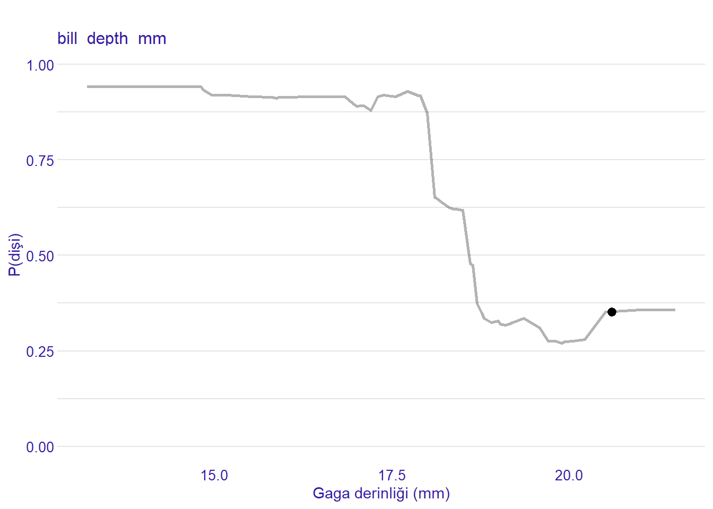
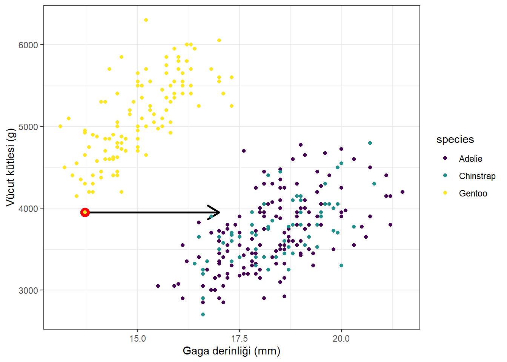
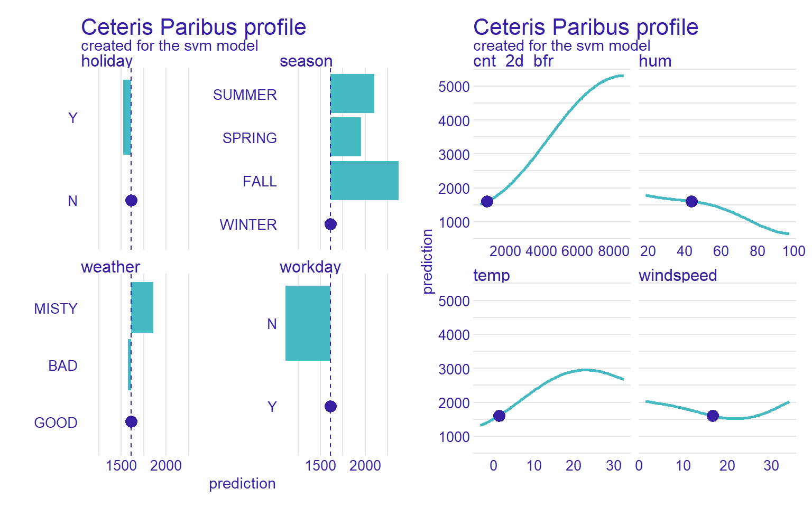
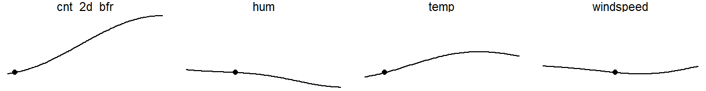
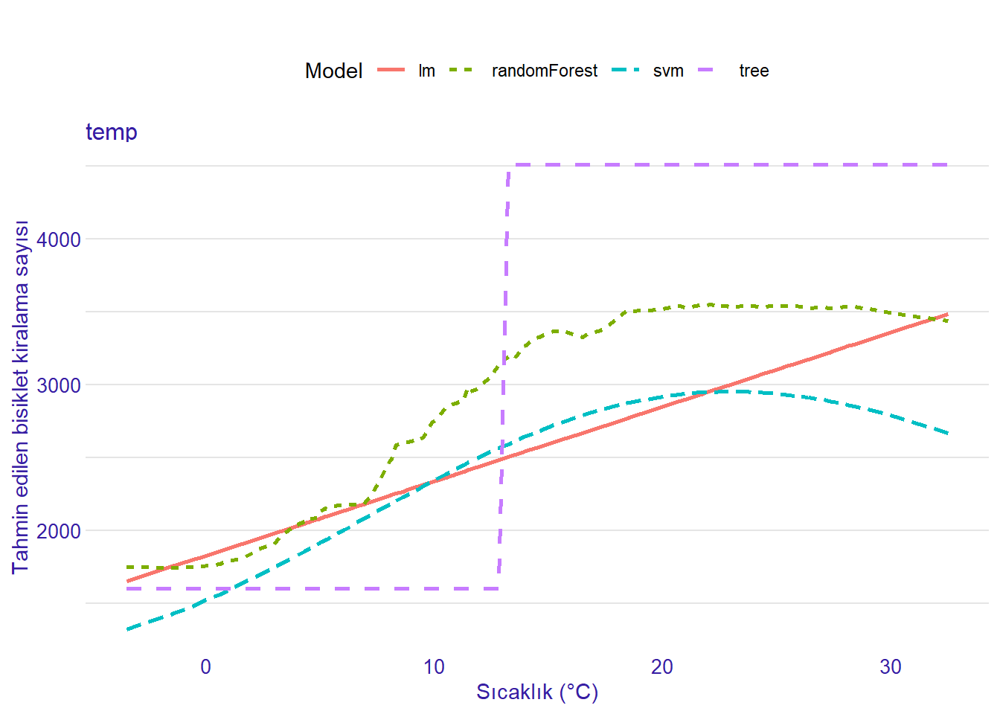

Ceteris Paribus Grafikleri
Ceteris paribus (CP) grafikleri (Kuźba vd. 2019), tek bir özniteliğin değişmesinin bir veri noktasının tahminini nasıl değiştirdiğini görselleştirir.
Adı Latince ve kulağa karmaşık gelse de (“diğer her şey eşitken”: bir özniteliği değiştirip diğerlerine dokunmamak), yapılabilecek en yalın çözümlemelerden biridir.1
Yalnızca bir özniteliğe bakar, değerlerini sistematik olarak değiştirir ve tahminin bu öznitelik aralığında nasıl değiştiğini çizer.
Yine de modelden bağımsız (model-agnostic) yorumlamanın temel ilkelerini öğrettiği için kitaptaki bu yöntem ailesine başlamak için birebirdir.
Yalınlığı da aldatmasın: Birden fazla ceteris paribus eğrisini2 yaratıcı biçimde birleştirerek modelleri, öznitelikleri karşılaştırabilir ve çok sınıflı sınıflandırma modellerini inceleyebilirsin.
CP eğrileri, Bireysel Koşullu Beklenti (ICE) eğrilerinin ve Kısmi Bağımlılık Grafiklerinin (PDP) yapı taşlarıdır; bkz. Şekil 1.
ICE grafikleri, bir veri kümesindeki tüm CP eğrilerini içeren CP grafikleridir.
Kısmi bağımlılık grafiği (PDP), aynı veri kümesindeki tüm CP eğrilerinin ortalamasıdır.

Algoritma
Ceteris paribus algoritmasıyla başlayalım.
Bu aynı zamanda matematiğin işleri olduğundan daha karmaşık gösterebileceğine dair küçük bir örnektir.
Sayısal öznitelikler için algoritma şöyledir:
Girdi: Açıklanacak veri noktası \(\mathbf{x}^{(i)}\) ve öznitelik \(j\)
Eşit aralıklı bir değer ızgarası oluştur: \(z_1, \ldots, z_K\); tipik olarak \(z_1 = \min(\mathbf{x}_j)\) ve \(z_K = \max(\mathbf{x}_j)\).
Her ızgara değeri \(z_k \in \{z_1, \ldots, z_K\}\) için:
Yeni veri noktası oluştur: \(\mathbf{x}^{(i)}_{x_j := z_k}\)
Tahmini al: \(\hat{f}(\mathbf{x}^{(i)}_{x_j := z_k})\)
CP eğrilerini görselleştir:
\(\left\{\left(z_k, \hat{f}(\mathbf{x}^{(i)}_{x_j := z_k})\right)\right\}_{k=1}^K\) noktaları için çizgi çiz
Özgün veri noktası için nokta koy: \(\left(x_j^{(i)}, \hat{f}(\mathbf{x}^{(i)})\right)\)
Izgara noktalarının sayısı arttıkça CP eğrisi daha ayrıntılı olur; ama modelin predict işlevine de o kadar çok çağrı yapılır.
Kategorik öznitelik için:
Benzersiz kategorilerin listesini oluştur: \(z_1, \ldots, z_K\)
Her kategori \(z_k \in \{z_1, \ldots, z_K\}\) için:
Yeni veri noktası oluştur: \(\mathbf{x}^{(i)}_{x_j := z_k}\)
Tahmini al: \(\hat{f}(\mathbf{x}^{(i)}_{x_j := z_k})\)
x ekseninde kategoriler, y ekseninde tahminler olacak şekilde çubuk veya nokta grafiği çiz.
Aslında gerektiğinden daha karmaşık duruyordu. Somutlaştırmak için örneklere geçelim.
Örnekler
İlk örnekte, bir penguenin dişi olma olasılığını tahmin eden rastgele ormana bakıyoruz.
Test kümesindeki ilk pengueni inceliyoruz: gaga derinliği 20.6 milimetre olan bir Adelie pengueni (gerçek etiket erkek).
Şekil 2, bu penguenin gaga derinliği azaltıldığında tahmin edilen P(dişi) değerinin önce hafifçe azaldığını, ardından belirgin biçimde arttığını gösterir.3
Görev ikili sınıflandırma olduğu için \(\mathbb{P}(Y = \text{male})\) değerini görselleştirmek gereksizdir; bu, \(\mathbb{P}(Y = \text{female})\) grafiğinin tersine çevrilmiş hali olur.
Ama ikiden fazla sınıfımız olsaydı, tüm sınıfların ceteris paribus eğrilerini tek bir grafikte çizebilirdik.
Yine akılda tutmalıyız ki bir özniteliği değiştirmek, diğer özniteliklerle olan bağımlılığı bozabilir.
Korelasyona ve diğer bağımlılık ölçülerine bakmak yardımcı olabilir.
Gaga derinliği, vücut kütlesi ve yüzgeç uzunluğu ile ilişkilidir.
Bu yüzden Şekil 2 incelenirken, bu ceteris paribus grafiğinde gaga derinliğindeki güçlü azaltmaları aşırı yorumlamamalıyız.
Uyarıİkili bağımlılıkların ötesine bak
Şekil 3, en hafif Gentoo pengueninin gaga derinliği özniteliğini yapay olarak değiştirdiğimiz bir örneği gösterir.
Veri noktası, yalnızca vücut kütlesi ile gaga derinliği kombinasyonuna bakıldığında gerçekçidir.
Yalnızca gaga derinliği ve türe bakıldığında da gerçekçidir.
Ancak yeni gaga derinliği, vücut kütlesi ve tür birlikte düşünüldüğünde gerçekçi değildir.

Ardından, hava durumu ve mevsim bilgisine dayanarak kiralanan bisiklet sayısını tahmin eden SVM’i inceliyoruz.
winter mevsiminde, good havada bir gün seçip özniteliklerin değiştirilmesinin tahmini nasıl değiştireceğine bakıyoruz.
Bu kez tüm öznitelikler için görselleştiriyoruz; bkz. Şekil 4.
Tahmini en çok, 2 gün önceki kiralanan bisiklet sayısındaki değişiklikler etkiler.
Ayrıca daha yüksek sıcaklık, daha fazla bisiklet kiralama için daha iyi olurdu.
Tahmin bir iş günü olmayan gün için olsaydı, SVM daha az bisiklet kiralama tahmin ederdi.

İpucuSparklines ile minimal sürüm
CP grafikleri, Tufte ve Graves-Morris (1983) tarafından popülerleştirilen yalın çizgi grafikleri olan sparklines biçiminde paketlenebilir.

Genel olarak CP grafikleri, öznitelik değişikliklerinin tahmini nasıl etkilediğini gösterir: her yönde küçük değişikliklerden büyük değişikliklere kadar.
Tüm öznitelikleri ortak bir y ekseniyle yan yana karşılaştırarak, bu veri noktasının tahmini üzerinde hangi özniteliğin daha fazla etkisi olduğunu görebiliriz.
Ancak öznitelikler arasındaki korelasyon bir sorundur; özellikle özgün değerden (nokta ile işaretli) uzak kısımları yorumlarken.
Örneğin sıcaklığı 30 derece Celsius’a çıkarıp mevsimi aynı (winter) bırakmak oldukça gerçek dışı olurdu.
Ceteris paribus grafikleri son derece esnektir.
Öznitelikleri nasıl farklı ele aldıklarını daha iyi anlamak için farklı modellere ait CP eğrilerini hesaplayabiliriz.
Şekil 5 içinde farklı modellerin ceteris paribus grafiklerini karşılaştırıyoruz.

Modellerin davranışlarının ne kadar farklı olduğunu burada görürüz:
Doğrusal model, sıcaklık ile tahmin edilen bisiklet kiralama sayısı arasındaki ilişkiyi doğrusal olarak modeller.
Ağaç tek bir sıçrama gösterir.
Rastgele orman ve SVM daha yumuşak bir artış gösterir; yüksek sıcaklıkta düzleşir ve SVM söz konusu olduğunda çok yüksek sıcaklıklarda hafifçe düşer.
İpucuKarşılaştırmalarda yaratıcı ol
Ceteris paribus grafikleri yalındır; yine de birden fazla CP eğrisini birleştirdiğinde şaşırtıcı derecede öğretici olur:
Öznitelikleri karşılaştır.
Farklı makine öğrenmesi algoritmalarından veya farklı hiperparametre ayarlarından gelen modelleri karşılaştır.
Sınıf olasılıklarını karşılaştır.
Farklı veri noktalarını karşılaştır (ayrıca ICE eğrilerine bak).
Veriyi alt kümelere ayır (örneğin ikili bir özniteliğe göre) ve CP eğrilerini karşılaştır.
Güçlü yönler
Ceteris paribus grafiklerini uygulamak ve anlamak son derece kolaydır.
Bu, onları yeni başlayanlar için iyi bir giriş noktası yapar; ayrıca modelden bağımsız açıklanabilirliği özellikle uzman olmayanlara anlatmak için de uygundur.
CP grafikleri, atıf (attribution) yöntemlerinin sınırlılıklarını gidermeye yardımcı olabilir.
SHAP veya LIME gibi atıfa dayalı yöntemler, tahmin işlevinin yerel değişikliklere ne kadar duyarlı olduğunu göstermez.
Ceteris paribus grafikleri bu teknikleri tamamlar ve bireysel tahminleri açıklarken daha tam bir tablo sunar.
Ceteris paribus grafikleri esnek yapı taşlarıdır.
Başka yorumlama yöntemlerinin yapı taşlarıdır; ayrıca bu çizgileri modeller, sınıflar, hiperparametre ayarları ve öznitelikler boyunca birleştirerek tahminler hakkında nüanslı içgörüler de üretebilirsin.
Sınırlılıklar
Ceteris paribus grafikleri aynı anda yalnızca bir öznitelik değişimini gösterir.
Bu yüzden iki özniteliğin nasıl etkileştiğini görmeyiz.
Elbette iki özniteliği de değiştirebilirsin; özellikle biri sürekli, diğeri ikiliyse, bunları aynı CP grafiğinde çizebilirsin.
Ama bu daha elle yapılan bir süreçtir.
Öznitelikler ilişkili olduğunda yorum zarar görür.
Öznitelikler ilişkiliyken eğrinin her parçası olası değildir; bazıları tamamen gerçek dışı bile olabilir.
Bu, örneğin ceteris paribus grafiklerinin aralığını (en azından ilişkili öznitelikler için) kısaltarak hafifletilebilir.
Ama bu da bu aralıkların ne olduğunu söyleyen bir modele veya işleme ihtiyaç duyacağımız anlamına gelir.
Genel olarak nedensel yorum konusunda dikkatli olmalısın; ya da nedensel bir yorum istiyorsan modelin kendisinin nedensel olduğundan emin olmalısın.
Bu, tüm yorumlama yöntemlerinin sorunudur; ancak CP grafiklerinde hatalı nedensel yorum riski daha yüksek olabilir çünkü bu grafikleri uzman olmayanlara gösterme eşiği daha düşüktür.
Yazılım ve alternatifler
Bu bölümdeki tüm grafikleri ceterisParibus R paketi ile oluşturdum.
Ayrıca bir Python uygulaması da vardır.
ICE grafiği üretebilen herhangi bir araçla da (örneğin ICEBox ve iml) CP grafikleri oluşturabilirsin; yeter ki yalnızca ilgilendiğin tek veri noktasını içeren bir “veri kümesi” veresin.
Yine de ceteris paribus eğrilerini karşılaştırmayı kolaylaştırdığı için ceterisParibus paketi daha uygundur.
Referanslar
Kuźba, Michał, Ewa Baranowska, ve Przemysław Biecek. 2019. “pyCeterisParibus: Explaining Machine Learning Models with Ceteris Paribus Profiles in Python”. Journal of Open Source Software 4 (37): 1389. https://doi.org/10.21105/joss.01389.
Tufte, Edward R, ve Peter R Graves-Morris. 1983. The Visual Display of Quantitative Information. Graphics Press Cheshire, CT.
Dipnotlar
Latince ismin hayranı değilim; okulda Latincenin İtalyanca gibi dilleri öğrenmeye yardımcı olacağı söylenirdi. İtalyanca öğrenmek istiyorsan daha iyi yardım eden şey nedir biliyor musun? Doğru. Doğrudan İtalyanca öğrenmek.↩︎
“CP eğrisi” derken tek bir çizgiyi, “CP grafiği” derken bir veya daha fazla CP eğrisi gösteren bir şekli kastediyorum.↩︎
Çevirmen notu: Kaynak kitaptaki çizim ile P(female) etiketi arasında sınıf seçimine bağlı bir tutarsızlık vardır. Bu sürümde dişi olasılığı sütun adıyla seçilmiştir; bu nedenle eğri kaynak şekildekinin ters yönündedir.↩︎